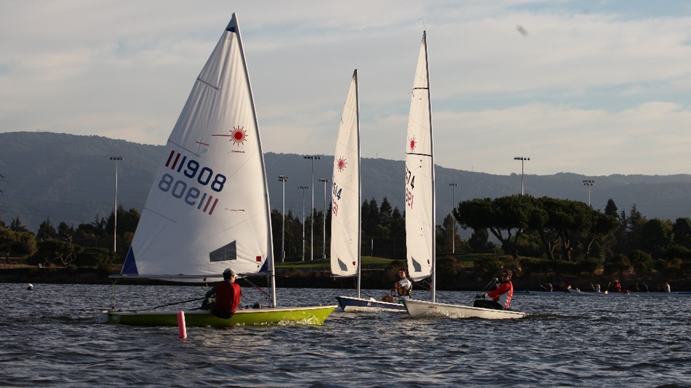

-
 80°
80°
-
 12KT
12KT

clubs & racing
Clubs & Racing
Fremont Sailing Club
The 2024 race season is now upon us. The Fremont Sailing Club will be hosting races at Shoreline Lake on Sundays throughout the spring, summer and fall. We are a small boat sailing club that sails an assortment of dinghies such as Lido 14, El Toro, Sunfish, Lasers, Holders and others. Come join us to find out the possibilities of either crewing on a boat, bring your own boat or renting a Shoreline sailboat and sailing with us. The races begin with a skippers meeting at 10:30 am and typically include three or more races per day, depending on lake conditions. For more info and to contact us, our website is www.fremontsailingclub.org. We also sail and have events at other venues around northern California and that info is also available on our website.
Spring 2024 Races
- Apr. 21 FSC Sail-A-Dinghy at Shoreline
- May 5 FSC Spring #1
- May 19 FSC Spring #2
- June 9 FSC Spring #3
Summer 2024 Races
- June 23 FSC Summer #1
- July 7 FSC Summer #2
- July 21 FSC Summer #3
Fall 2024 Races
- Aug. 4 FSC Fall #1
- Aug. 25 FSC Fall #2
- Sep. 8 FSC Fall #3
- Sep. 22
- Sep. 29
Ho'oku'i Outrigger Canoe Club
If your New Year’s resolution is to try something new, Shoreline is also home base for an outrigger canoe club (Ho’oku’i – Hawaiian for “to join together”).
Drop by to check out the practices and give it a go in a canoe. All skill levels and ages are welcome – the Club provides a short “how-to” that even novices can then apply on the water.
Practice times are:
- Tuesday & Thursday, 5:30pm-7:30pm
- Saturdays, 8:30am-11:30am
Not sure about joining? Check out the free Outrigger Community Days here at Shoreline. These are great opportunities for the public to meet the Club members, learn the cultural history of the sport, receive novice instruction, and try paddling in an outrigger. As always, Club membership is open to those who would like to join.
2024 Community Days (10am-12:30pm)
- March 16
- April 13
- May 11
- June 15
Kayak Polo Club
Bay Area Kayak Polo Club - Learn more on their website or contact Peter Hargreaves for additional information.
Practice times Sundays at 10am
Starting in April, also Thursdays at 6:30pm.